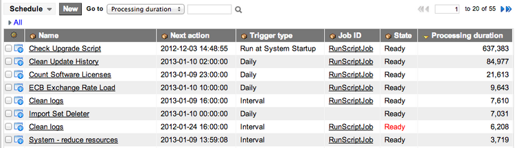

System Performance Best Practices
Contents
- 1 Overview
- 2 Network Performance
- 3 Application Server Performance
- 3.1 Monitoring Response Times
- 3.2 Removing Unused Inactivity Monitors
- 3.3 Optimize Your Queries
- 3.4 Adjusting the Auto-Complete Wait Time
- 3.5 Checking the SLA Trace Level
- 3.6 Monitoring the Processing Duration of Scheduled Jobs
- 3.7 Default Row Count
- 3.8 Go To Search Option
- 3.9 Auto-complete Search Option
- 3.10 Table Rotation
- 4 Browser Performance
1 Overview
Performance issues can arise with your ServiceNow instance in the network, application server, and browser. This article provides performance-related troubleshooting tips for all three areas.
One of the first things to consider when troubleshooting performance issues is to determine where the issues originated. This can be accomplished by performing basic troubleshooting steps, such as testing the issues on different computers or using different browsers.
In addition to following the recommendations in this article, consider activating the client transaction timings feature, which provides extra information on the amount of time spent by the client, server, browser, and network. This feature helps find long-running processes and provides information on where in the process the performance issue occurs.
2 Network Performance
One clear indicator of a network issue is if users in one location have very good performance while users in another location have very poor performance. This indicates that the application server is fine. If the browser settings are identical for these users, the only meaningful difference is the network.
2.1 Monitoring Ping Times
The coarsest measure of network response time is a ping, which measures the total time for a packet to travel from the source machine to the target and back again. Ideally, the response time should be under 100ms in the United States or under 150 ms in Europe or Asia. In practice, though, anything under 250 ms is not a major component in perceived response time.
2.1.1 Windows
To do a ping in Windows, open a command prompt window, and enter:
ping -t <yourinstancename>.service-now.com
Sample output:
{kind=link}
2.1.2 Macintosh
To do a ping from Mac OS X, open a terminal window and enter:
ping <yourinstancename>.service-now.com
Sample output:
{kind=link}
2.2 Running a Traceroute
If you are observing slow ping times, and your network accepts the forward Internet Control Prototcol (ICMP), you can run a traceroute. Traceroutes are great tools for identifying network bottlenecks.
2.2.1 Windows
To run a traceroute in Windows, open a command prompt window and enter:
tracert <yourinstancename>.service-now.com
Sample output:
C:\dev\mysql5\bin>tracert mycompany.service-now.com Tracing route to mycompany.service-now.com [70.87.98.130] over a maximum of 30 hops: 1 1 ms 1 ms 1 ms 12.192.116.193 2 4 ms 4 ms 4 ms 12.116.227.37 3 32 ms 32 ms 32 ms gbr1-p90.sd2ca.ip.att.net [12.123.145.178] 4 33 ms 33 ms 33 ms tbr1-p013503.phmaz.ip.att.net [12.122.2.142] 5 34 ms 33 ms 33 ms tbr2-cl1521.phmaz.ip.att.net [12.122.10.194] 6 32 ms 33 ms 33 ms tbr2-cl1592.dlstx.ip.att.net [12.122.10.81] 7 31 ms 50 ms 31 ms gar1-p370.dlrtx.ip.att.net [12.123.16.173] 8 31 ms 31 ms 31 ms 12.119.136.14 9 31 ms 31 ms 31 ms te9-1.dsr02.dllstx3.theplanet.com [70.87.253.22] 10 37 ms 37 ms 37 ms vl41.dsr01.dllstx4.theplanet.com [70.85.127.83] 11 31 ms 37 ms 31 ms gi1-0-1.car16.dllstx4.theplanet.com [67.18.116.67] 12 32 ms 32 ms 32 ms 70.87.98.130 Trace complete.
2.2.2 Macintosh
To run a traceroute from Mac OS X, open a terminal window and enter:
traceroute <yourinstancename>.service-now.com
Sample output:
$ traceroute mycompany.service-now.com traceroute to mycompany.service-now.com (70.87.98.130), 64 hops max, 52 byte packets 1 1 ms 1 ms 1 ms 12.192.116.193 2 4 ms 4 ms 4 ms 12.116.227.37 3 32 ms 32 ms 32 ms gbr1-p90.sd2ca.ip.att.net [12.123.145.178] 4 33 ms 33 ms 33 ms tbr1-p013503.phmaz.ip.att.net [12.122.2.142] 5 34 ms 33 ms 33 ms tbr2-cl1521.phmaz.ip.att.net [12.122.10.194] 6 32 ms 33 ms 33 ms tbr2-cl1592.dlstx.ip.att.net [12.122.10.81] 7 31 ms 50 ms 31 ms gar1-p370.dlrtx.ip.att.net [12.123.16.173] 8 31 ms 31 ms 31 ms 12.119.136.14 9 31 ms 31 ms 31 ms te9-1.dsr02.dllstx3.theplanet.com [70.87.253.22] 10 37 ms 37 ms 37 ms vl41.dsr01.dllstx4.theplanet.com [70.85.127.83] 11 31 ms 37 ms 31 ms gi1-0-1.car16.dllstx4.theplanet.com [67.18.116.67] 12 32 ms 32 ms 32 ms 70.87.98.130 Trace complete.
2.2.3 Reading a Traceroute
Each line in the traceroute represents a network step between the source machine and the destination machine. In the traceroute above, a total of 12 steps were required to get network traffic from the source computer to <yourinstancename>.service-now.com.
- The left column is the step number.
- The next three columns represent latency estimates (performed three times to give an average).
- The fifth column is the IP address of the destination machine.
In the sample output, network traffic was identified in row 1 at 12.192.116.193. It then took an average of 4ms to get to 12.116.227.37 in row 2.
There may be a performance issue if one or more steps in a traceroute show unusually long time periods, for example, 500 ms from one step to the next. Another indication of a performance issue is an asterisk (*) instead of a time. For example:
1 100 ms * 500ms 12.192.116.193
The asterisk indicates that a particular packet failed to move between the two computers in the network. This can indicate network problems.
| |
Note: If all three latency times for a particular step display asterisks, it can indicate that a particular router is set to not forward ICMP. So three asterisks can potentially be a false alarm. |
3 Application Server Performance
Application server performance issues generally manifest themselves in slow response times. Monitoring response times and checking logs can help when identifying performance problems.
3.1 Monitoring Response Times
To maintain good performance levels on the application server, regularly monitor response times throughout your instance, including at the transaction level and on forms.
While tracking response times on the application server, you may observe the following performance-related issues:
- A period when all transactions are taking an unusually long processing time (for example, processing for all transactions generally takes 3 to 4 minutes to complete, but now it is taking 20 minutes). That usually indicates that the application server was running some sort of unusual load, such as a large report, a backup, or an LDAP refresh.
- A specific transaction that repeatedly took an unusually long time. For example, a list of all closed incidents, sorted by short description, took a long time. That usually indicates a particular transaction that put an unusual database load on the system, such as causing it to sort 500,000 records on an unindexed field.
3.1.1 Tracking Transaction Log Response Times
As you operate ServiceNow, the instance automatically logs the vital statistics of every transaction it processes. That information is available to users with the admin role.
To view the average response time of all transactions for the current day:
- Navigate to System Logs > Transactions.
- This displays a list of transactions.
- Scroll to the bottom of the list to see the Avg value.
- If the Average value does not appear at the bottom of the list, perform the following steps.
- Right-click the Response time column heading and select the appropriate option for your version:
- In the Response time (calculations) dialog box, select Average value and click OK.
{kind=link}
| |
Note: To limit the list of transactions to those processed during a specific time period, change the default filter. |
For each completed transaction, the following information is available:
- Date and time, user ID, IP address, and URL of the transaction
- Total response time, in milliseconds (browser time is not included)
- Network time, in milliseconds (network transmission time, both from and to the user)
- SQL time, in milliseconds (time spent executing SQL commands)
- SQL count (number of SQL commands executed)
- Business rule time, in milliseconds (time spent processing business rules)
- Business rule count (number of business rules executed)
- Output length (number of bytes the transaction returned, after any compression)
3.1.1.1 Fixing the Issues
If you observed any of the issues above, try the following fixes to improve performance:
- If there is a period of slow response time, look for one or more transactions that span the entire period. For example, it was slow for six minutes, and there was one six-minute-long transaction that ran the whole time". Typically, that long transaction is loading down the system. Often, these issues can be resolved with additional database indexing to make the transaction faster. However, certain types of queries are always slower than others, regardless of indexing.
- Ensure that a cache flush is not being run during business hours. Be aware, however, that when update sets are committed, they automatically trigger cache flushes, which prevent older data from interfering with changes and updates. So do not schedule update sets to be committed during business hours.
- If there is no identifiable cause, but overall response time is still slow, contact ServiceNow Technical Support to find out if anything is affecting the application server hardware.
3.2 Removing Unused Inactivity Monitors
Inactivity monitors run in the background at all times and trigger events, such as incident.inactivity, when specified tasks are inactive for a user-configurable period. The event processing engine checks through the notifications and script actions to see if there is anything configured to respond to a specific event. If not, it goes unanswered.
Inactivity monitors that produce large numbers of unanswered events can adversely impact the performance of the event processing engine. They can also delay notifications from being sent, records from being updated, or other actions from occurring normally. Removing unnecessary inactivity monitors can improve performance.
To identify inactivity monitors that are not being used:
- Navigate to System Policy > SLA > Inactivity Monitors.
- Open each inactivity monitor record and note the table name.
- Navigate to System Policy > Events > Script Actions
- Create a filter Event name is <TableName>.inactivity. For example, incident.inactivity is the inactivity monitor for the Incident table.
- Navigate to System Policy > Email > Notifications and create a similar filter.
- If no records are found in either Script Actions or Notifications, you can safely delete the corresponding inactivity monitor.
3.3 Optimize Your Queries
Consider the impact your filters and queries have on the system and try to optimize them where possible. For example, you have a choice list with four options and an option -- None --. Your requirement asks to List all records where any value is chosen.. At first you may choose a filter: Shark | is one of | Mako, Great White, Nurse, White Tip, Black Tip.
The problem with this is that the database has to look for all of those options when it queries. It also means that if an additional option is added, your query needs to be updated.
To improve performance and reduce maintenance, change the query to Shark | is not | -- None --, or Shark | is | anything. Now the database is looking for a specific value rather than a range and as options are added to the choice list, your condition/filter does not need to be revisited.
3.4 Adjusting the Auto-Complete Wait Time
The auto-complete feature for reference fields uses Ajax to allow the client browser to send a request to the server for any records that match a user's entry. For example, if the user enters inc' in a reference field, the system has a user-defined number of milliseconds before it makes a request to the server for all entries that begin with inc. The glide.xmlhttp.ac_wait_time property defines this time period with a default of 250 milliseconds.
Some of the tables being queried can contain large amounts of data, sometimes more than 500,000 records. You may notice performance issues if the user has only enough time to enter a very few characters. The fewer characters entered, the more the server must work to respond to the request. Entering more characters returns fewer results. So, try increasing the glide.xmlhttp.ac_wait_time property setting in 50 milliseconds increments until acceptable performance is achieved.
It is recommended that the value not exceed 750, as users may complain of latency from the time they stop typing to the time the system responds with auto-complete entries.
3.5 Checking the SLA Trace Level
The SLA trace level controls the number of messages sent to the system log.
To set the SLA trace level:
- Navigate to System Properties > SLA.
- In the Log/trace level of TaskSLAController (Default:notice) property, select notice.
{kind=link}
The lower the selection on this list, the more messages are sent to the system log. Logging a large number of messages can increase log size and adversely impact backup and restore time. The info setting is typically used only when performing detailed SLA debugging.
3.6 Monitoring the Processing Duration of Scheduled Jobs
The system scheduler maintains a record of all scheduled jobs run on an instance. Check the scheduled jobs list periodically to keep track of system performance and to screen for issues.
- Navigate to System Scheduler > Scheduled Jobs > Scheduled Jobs.
- Personalize the list and add the Processing duration column to display the time taken to process each job.
- Sort the list by descending duration to see the longest running jobs first.
- Processing duration times are in milliseconds. A value of 1,086 is 1.086 seconds.
- 
- Check to see if the jobs complete unusually quickly or slowly.
- For example, a job that imports 50,000 records and runs several business rules should take longer than 300 milliseconds to complete. Such a short duration may indicate an error. On the other hand, if the job takes six hours to complete, there may be a need for performance optimization such as disabling business rules to speed things up.
{kind=link}
There are no established standards for what period of time is too long or too short for a job to execute. Experience and periodic inspection of the scheduled jobs will help you understand system functionality and areas where performance may be an issue. For example, a daily scheduled job shows a processing duration between 1,000 and 1,500 for six consecutive days. If it jumps to 38,515 the next day, consider investigating other system settings that may be impacting the daily scheduled job, such as plugins that have been enabled or concurrently running scheduled jobs.
| |
Note: Create intelligent scripted scheduled jobs to run only on a specific instance and reduce the system load on those that do not need it. Some scripted scheduled jobs are required on production instances, while there is no need to run them in development or test environments. |
3.7 Default Row Count
Avoid modifying the default system User Preference named rowcount which controls the display of items per page (default is 20). This is not recommended as it will slow down list viewing and has the potential to become a scalability and performance issue. You can proactively prevent users from selecting a large row count by reducing the available options (anything above 100 is not recommended). To do this, you will need to modify the UI System Property named glide.ui.per_page controls.
For more information about performance and data display, see Improve performance by displaying "just enough" data on the ServiceNow Community.
3.8 Go To Search Option
If you're familiar with the Go To search option, you may know that there's a special System Property named glide.ui.goto_use_contains which controls whether the search performs a contains query (if set to true) or a greater than query (if set to the default value false). It is recommended you leave this system property set to false, contains searches are less efficient than greater than or other query operators.
3.9 Auto-complete Search Option
The system property named glide.ui.ref_ac.startswith controls whether auto-complete searches use a starts with or contains search. A start with query is more efficient as it returns less records. See Improving Auto-Complete Queries.
3.10 Table Rotation
As data sets in tables grow, large queries in the application server can impact performance. There are two plugins you can use to help manage large quantities of data. They work by separating data sets into individual tables based on user-specified time parameters. Each technique handles data in a different manner:
- Table Rotation works by rotating among a small set of tables, and deleting and reusing the old tables for new data. Example: syslog and ecc_queue
- Table Extension works by periodically starting a new table and allowing old tables to be easily archived and removed from the system. Example: sys_audit and sys_email
Ensure the Database Rotation plugin is enabled and that you have configured common large tables to be rotated. This preserves instance performance and averts risk associated with querying growing data sets.
Additionally, the Database Rotations Default Tables plugin (automatically enabled for new instances since June11 Release) is used to apply Table Rotation and Extension to specific tables.
Important: If the Database Rotation plugin is not enabled in your instance or you don't have any table rotation groups specified, then it's highly recommended you make plans to make these changes. Do not activate the Database Rotations Default Tables plugin. Instead, specify the tables manually, after consulting with a ServiceNow Support representative.
4 Browser Performance
Browser performance issues are often related to how the browser handles and renders compressed data. Monitoring how the browser handles caching of data from secured sites can also affect performance.
4.1 Configuring the Browser to Accept Compression
To speed performance, most browsers have the ability to accept compressed data from an application server. This configuration avoids the need to send large data packets. Instead, the browser indicates "I can accept compressed data if you can send it." The application server then compresses the data before sending it.
Compression is enabled by default on all ServiceNow application servers, which means that the server always sends compressed data if the browser accepts it. There are browser settings that dictate whether a browser can inform the server properly that it is willing to accept compressed responses. Refer to your browser documentation for details.
4.1.1 Compressing Data in IE 6 and 7
To make sure a browser running Internet Explorer 6 or 7 requests compressed data:
- Navigate to Tools > Internet Options.
- Verify that the following check boxes are selected in the Advanced tab (HTTP1 1.1 settings subsection):
- Use HTTP 1.1
- Use HTTP 1.1 through a proxy server
{kind=link}
Frequently, a proxy or edge device disables gzip compression. Enabling gzip compression would speed up the interactions. For more information, consult your proxy or edge device documentation.
4.2 Caching Items from Secure Websites
If your organization has a policy to never cache items from an https location, every interaction with the ServiceNow server will fetch a large amount of JavaScript and images.
To prevent this performance impact, make sure the Internet Explorer Do not save encrypted pages to disk option is off (the Microsoft default). For more information, see this Microsoft article: http://support.microsoft.com/kb/260650. For other browsers, consult the manufacturer's documentation.
{kind=link}